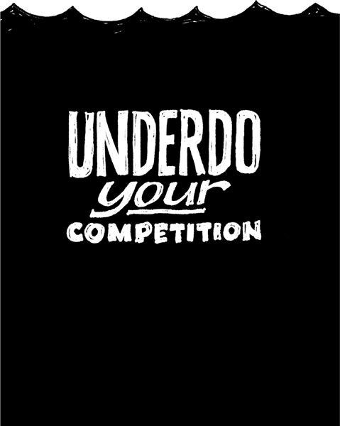

{% include JB/setup %}
{% raw %}
<div>

<h2 id="filepos148411" class="calibre19"><span class="calibre2"><a class="calibre13"></a><strong class="calibre14">Pick a fight</strong></span></h2><div class="calibre4"></div>
<p class="calibre7">If you think a competitor sucks, say so. When you do that, you'll find that others who agree with you will rally to your side. Being the anti-______ is a great way to differentiate yourself and attract followers.</p>
<p class="calibre17">For example, Dunkin' Donuts likes to position itself as the anti-Starbucks. Its ads mock Starbucks for using "Fritalian" terms instead of small, medium, and large. Another Dunkin' campaign is centered on a taste test in which it beat Starbucks. There's even a site called <a href="http://DunkinBeatStarbucks.com" class="calibre9">DunkinBeatStarbucks.com</a> where visitors can send e-cards with statements like "Friends don't let friends drink Starbucks."</p>
<p class="calibre17">Audi is another example. It's been taking on the old guard of car manufacturers. It puts "old luxury" brands like Rolls-Royce and Mercedes "on notice" in ads touting Audi as the fresh luxury alternative. Audi takes on Lexus's automatic parking systems with ads that say Audi drivers know how to park their own cars. Another ad gives a side-by-side comparison of BMW and Audi owners: The BMW owner uses the rearview mirror to adjust his hair while the Audi driver uses the mirror to see what's behind him.</p>
<p class="calibre17">Apple jabs at Microsoft with ads that compare Mac and PC owners, and 7UP bills itself as the Uncola. <a class="calibre16"></a>Under Armour positions itself as Nike for a new generation.</p>
<p class="calibre17">All these examples show the power and direction you can gain by having a target in your sights. Who do you want to take a shot at?</p>
<p class="calibre17">You can even pit yourself as the opponent of an entire industry. Dyson's Airblade starts with the premise that the hand-dryer industry is a failure and then sells itself as faster and more hygienic than the others. I Can't Believe It's Not Butter puts its enemy right there in its product name.</p>
<p class="calibre17">Having an enemy gives you a great story to tell customers, too. Taking a stand always stands out. People get stoked by conflict. They take sides. Passions are ignited. And that's a good way to get people to take notice.</p>
<p class="calibre3"><a class="calibre16"></a></p><div class="calibre4"></div>
</div>

{% endraw %}

